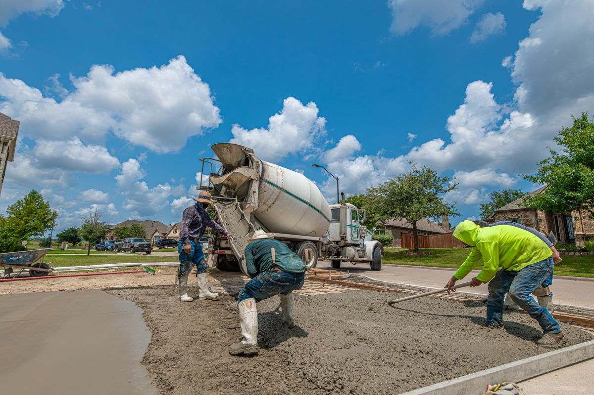

Concrete Driveways
New installations and full replacements engineered for strength, drainage and a clean finish that boosts curb appeal.
A driveway takes full vehicle weight every single day, so we build it for that load. We strip the old surface, excavate to stable soil, lay and compact a crushed aggregate base sized to your ground conditions, set forms to the exact width — including the apron line at the street — and place a 4"–6" slab, adding reinforcement where the ground is prone to movement. Slope is graded away from the garage so water never sits at the door, control joints are cut on a planned pattern, and a broom finish adds grip in rain and winter ice.
- ✔ New driveway installation
- ✔ Driveway replacement
- ✔ Driveway widening & aprons
- ✔ Concrete finishing & joints
- ✔ Drainage & edge detailing
- ✔ Residential driveways
Thickness
4"–6"
Base
Compacted
Vehicles*
~7 days
Recent completed project — Maple District: 620 sq ft two-car driveway, full removal and replacement with a new sidewalk apron, finished in 4 working days. *Curing guidance is confirmed on site for every job.
Request a Driveway Estimate